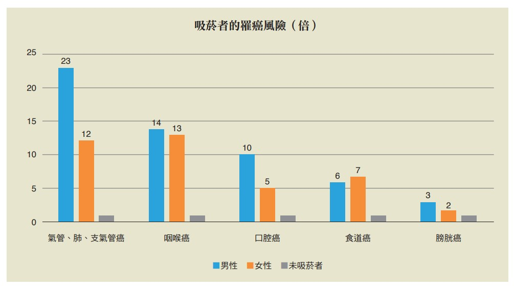

| 吸菸的危害 |
菸品中含有7000多種化學物質，其中包括250種危害物質與93種致癌物，最為人所熟知的如尼古丁、一氧化碳、刺激物、亞硝胺、砷、甲醛與鎘等，因此許多疾病的發生都與菸害有密切關係，其影響可謂從頭到腳、由裡到外，無一處不傷害。
|
| 呼吸道疾病 |
菸草中的有毒微粒與有害氣體會傷害呼吸道黏膜，造成咳嗽、氣喘、 痰液增多、喉嚨痛等情形，並會導致肺功能下降，罹患慢性支氣管炎、肺氣腫及肺炎的風險增加。 |
| 心血管疾病 |
吸菸會使血中的膽固醇與纖維蛋白素原增加，造成血液凝塊阻塞血管，加上尼古丁會影響神經系統，使心跳加速、血管收縮、血壓上升，因而導致血壓升高、動脈硬化、狹心症、心肌梗塞及中風風險增加。 痰液增多、喉嚨痛等情形，並會導致肺功能下降，罹患慢性支氣管炎、肺氣腫及肺炎的風險增加。 |
| 消化道疾病 |
吸菸會破壞胃部中和酸性食物的能力，導致胃黏膜受損，引發胃潰瘍與十二指腸潰瘍。 痰液增多、喉嚨痛等情形，並會導致肺功能下降，罹患慢性支氣管炎、肺氣腫及肺炎的風險增加。 |
| 五官疾病 |
每日吸菸超過20根的人，發生白內障的機率是一般人的2倍，甚至可能導致失明。另外，會造成牙齦萎縮、牙齒脫落等狀況。
生殖系統疾病
吸菸使懷孕婦女產下低體重嬰兒及畸胎、死胎、流產、早產的危險性，早已被證實。 |
| 癌症 |
每日吸菸超過20根的人，發生白內障的機率是一般人的2倍，甚至可能導致失明。另外，會造成牙齦萎縮、牙齒脫落等狀況。
生殖系統疾病
國人十大死因之首的惡性腫瘤，例如肺癌、口腔癌、食道癌、膀胱癌、乳癌等癌症，更與吸菸有著密不可分的關聯。吸菸男性較不吸菸男性有23倍罹患氣管、支氣管、肺癌的風險、14倍咽喉癌風險及10倍口腔癌風險。 |
 |
| 二手菸的危害 |
二手菸是被動或非自願吸入的環境菸煙，不吸菸者被迫吸入，又可稱為被動吸菸或非自願性吸菸。在燃燒不完全的情形下，二手菸中含有的有害物質不亞於直接吸菸，且未稀釋的側流菸比主流菸有較高的酸鹼值、較小的粒子（易進入肺部深處）、較高濃度的一氧化碳、更多種的有毒和致癌物質，包括苯、氯乙酸、氰化氫及焦油內含有的芳香族碳氫化物等等。
短期暴露於二手菸，可能會造成咳嗽、頭痛、眼睛不適、喉嚨痛、打噴嚏、流鼻水、噁心、呼吸不順和心律不整等症狀。長期暴露將會造成更嚴重的胸腔問題和過敏 症，例如氣喘、支氣管炎和肺氣腫，還會增加心臟病和肺癌的罹患率。 |
| 三手菸的危害 |
三手菸是指殘留在抽菸者頭髮與衣物、或者抱枕與地毯上的有毒氣體與微粒，即使房間裡的煙霧散去多時，這些毒物仍不會消失。三手菸所含有毒物質包括用於化學武器的氰化氫、打火機油中的丁烷、油漆稀釋劑中的甲苯、砷、鉛、一氧化碳，甚至還包括具高度放射性的致癌物質釙210等。三手菸共含11種高度致癌化合物，對家中嬰幼兒的傷害更是不容小覷。 |
| 戒菸的好處 |
- 戒菸20分鐘後：心跳、血壓即恢復正常。
- 戒菸8小時後：血中尼古丁及一氧化碳減半，氧氣濃度回到正常。
- 戒菸1日後：體內排除一氧化碳，肺部清除香菸中的物質。
- 戒菸2日後：體內已無殘存尼古丁，味覺嗅覺明顯改善。
- 戒菸3日後：呼吸感覺較順暢，體能開始改善。
- 戒菸2-3週後：血液循環大幅改善
- 戒菸3-9個月後：大幅減少咳嗽及呼吸問 題，肺功能改善5-10%。
- 戒菸1年後：心臟病機率減半。
- 戒菸5年後：肺癌死亡率減半；口腔癌、食 道癌、喉癌機率減半。
- 戒菸10年後：肺癌死亡率降至與不吸菸者相同；口腔癌、食道癌、喉癌、膀胱癌、腎臟 癌、胰臟癌機率減少。
- 戒菸15年後：罹患心臟病機率降至與不吸菸者相同。
除了有利健康之外，戒菸對人際關係也是一個正向助力，家人及朋友不會再因為菸味而對你敬而遠之。簡言之，戒菸有百利而無一害，只要肯戒，永遠不會太遲。
|